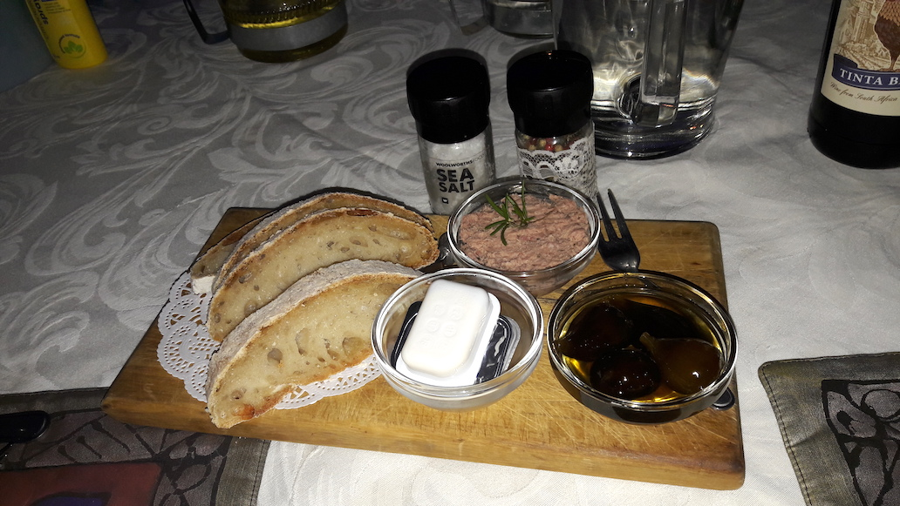

Tina's und Sascha's Südafrika-Reise
Clifton Bay
22 Februar 2018
Wir schliefen lange aus an diesem Tag. Gegen 12.30 Uhr kamen wir am Strand von Clifton Bay an.

Im Gegensatz zu den Stränden in Knysna war hier mehr los. Aber lange nicht so viel wie an europäischen Stränden.

Es war der heisseste Tag in der Woche mit 31 Grad. Ein bisschen gewöhnungsbedüftig waren die Getränke- und Eisverkäufer, die rumliefen und lautstark ihre Waren anpriesen.
Es kam eine Tanz- und Trommelgruppe in traditioneller Bemalung vorbei.

Wir hielten es 3 1/2 Stunden dort aus.
Ich hatte zu Sascha gesagt, dass seltsamerweise meine Beine keinen Sonnenbrand bekämen. Pustekuchen!
Zu Hause waren die Beine krebsrot!
Wir kochten dann Abendessen und unterhielten uns noch stundenlang mit Lance. Als er hörte, dass wir nur
noch ein paar Tage hier sind, gab er uns auch wertvolle Tips für Restaurant, Weinberge und viel mehr.
Ausserdem wollte er uns eine Anleitung für eine Biltong-Trockenkiste geben.
Dann könnten wir unser Biltong selbst herstellen. Das wäre toll!
Cape Point
21 Februar 2018
Wir fuhren zum Kap der guten Hoffnung mit Abstechern in Simons Town.


In Simons Town waren wir in einer Edelsteinfabrik. Sascha war sehr begeistert.


Ein Stück weiter, in der selben Stadt, konnte man Pinguine sehen. Allerdings peitschte der Wind so sehr, dass wir es nicht lange dort aushielten.

Einer der Pinguine sprang auf den Steg und lief unter den Leuten rum.

Weiter ging’s immer an der Küste entlang mit traumhaften Ausblicken.


Dann waren wir dort.

Mittlerweile fährt sogar eine Bahn das letzte Stück hoch. Natürlich gabs auch hier viele Touristen.


Und wir hatten, wie immer, super Wetter - nur ziemlich windig war es.

Es gab freche Affen, die überall auch auf den Autos saßen.
Manche hatten offenbar Essen geklaut.

Sie störten sich nicht daran, wenn man direkt an ihnen vorbei lief. Einer sprang sogar in den Kofferraum eines Autos. Die Frau erschrak ziemlich. Dann fuhren wir zurück.

Zu Hause kochten wir ein weiteres Mal Staussensteak mit Gemüse und Salat. Lecker!
Hermanus und Debora
20 Februar 2018
Gegen 11.00 Uhr verließen wir Elim und fuhren nach Hermanus.


Im Gegensatz zu früher gibt es heute dort viel mehr Läden und alles dort ist touristischer.
Wir bummelten durch verschiedene Stände und Läden. Auch hielten wir uns am ehemaligen Fischereihafen und an
der Küste auf. In Hermanus gab es viele Touristen, dennoch hat es einen gewissen Charm.

Wir assen asiatisch zu Mittag. (Es muss nicht immer T-Bone Steak sein.)
In einem Gässchen sahen wir Dassies (Klippschliefer).

Danach fuhren wir nach Strand um Debora, die Tochter von Sieglinde, zu besuchen.
Debora hat 2 Kinder, die etwas schüchtern waren. Wir unterhielten uns und aßen mit zu Abend.
Gegen 21 Uhr waren wir wieder zu Hause.
Elim
19 Februar 2018
Wir fuhren noch einmal nach Elim, da ich ausser Valerie und Andrew auch noch Karen und Peter gerne treffen wollte. Schon von Kapstadt aus, hatte ich mit Valerie ausgemacht, dass wir uns alle zum Braai (Grillen) treffen.
Direkt vor dem Gastehuis trafen wir praktischerweise Joyce, die das Gästehaus vermietet.
Sie sagte uns, dass wir das Gastehuis für uns hätten. Sehr praktisch für unser Braai!
Da wir früh dran waren, ruhten wir uns erst einmal aus, dann machten wir einen schwäbischen Kartoffelsalat.
Um 6 kam dann Valerie, die mich wie eine alte Bekannte in den Arm nahm. Die anderen kamen dann um 7. Es wurde ein netter Abend. Dieses Mal wurde sogar auch Wein getrunken.
Sascha wollte, damit ich mich mit meinen alten Freunden unterhalten kann, in der Küche die Guacamole machen.
Allerdings hatte ich nicht mehr an die alte Rollenverteilung in Elim gedacht.
Karen sagte zu mir: "Willst du nicht deinem Mann in der Küche helfen?" Ich besinne mich darauf, dass es
aus ihrer Sicht nahezu gemein von mir aussieht, dass der 'arme Kerl' auch noch Frauenarbeit tun muss.
Deshalb löse ich Sascha ab und sage ihm, dass er heute Abend bloss nichts mehr tun soll, sonst würde ich
mich blamieren. Sascha schaut ein wenig verwirrt …
Ansonsten war es wirklich sehr schön. Alle loben mein Afrikanns und Karen sagt mehrfach, dass sie mir von Herzen dankt, dass ich sie nach 23 Jahren nicht vergessen habe und sogar noch ihren Nachnamen wusste.

Sascha war beim Essen nun völlig von den Socken, als die Herren sich zuerst bedienen - die ganze Zeit
sitzen blieben und wir Frauen auch ganz selbstverständlich den Abwasch erledigten.
Nein, das kann man einem Mann nicht zumuten!
Ich habe damit kein Problem, denn solche Dinge verändern sich nicht von heute auf morgen.
Wir sitzen lange und ich werde nie vergessen wie fest mich Valerie beim Abschied gedrückt hat und mir
einen Schmatz gab.
Hout Bay
18 Februar 2018
Früh morgens war das Wetter bewölkt. Deshalb fuhren wir nicht wie geplant zum Cape Point (Kap der guten Hoffnung), sondern nach Hout Bay.

Dort gab es einen Fischereihafen und einen Strand. Dort waren verschiedene Läden mit Muscheln, Schmuck und allerlei Tand. Wir bummelten gemütlich bis der Hunger aufkommt.


Sascha überredete mich, zum ersten Mal in meinem Leben Hummer zu essen.
Hummer gab es in einem einfachen Selbstbedienungsrestaurant in einer Box mit 4 kleinen halbe Hummern
mit Pommes. Der Spaß kostete pro Person nur 23 Euro.
Es war sehr lecker, aber auch eine ziemliche Sauerei! Man isst ja mit den Händen.

Danach fuhren wir zurück, kamen aber an einer Art Vogelpark vorbei, in dem es auch Affen gab.


Im Affengehege, durch das man durchlaufen konnte, kletterten mehrere Äffchen auf mir herum.
Sie öffneten den Reissverschluss meines Rucksacks weil sie darin wohl Futter vermuteten …
Ich fand es sehr lustig!


Die Vögel waren auch toll, wenn auch nicht ganz so beindruckend wie die Äffchen. Danach fuhren wir wieder nach Hause.
Kirstenbosch und Sieglinde
17 Februar 2018
Nach dem Ausschlafen waren wir einkaufen.
Wir freuten uns schon darauf Sieglinde zu treffen, eine ausgewanderte Deutsche, bei der ich vor 23 Jahren in Kapstadt gewohnt hatte.
Also besorgten wir unter anderem auch Kuchen. Allerdings kam Sieglinde schon früher als erwartet.
Als wir vor dem Tor unseres Backpackers standen, wartete sie dort schon auf uns.
Es war ein herzliches Wiedersehen und Sieglinde schaute sich dann erst einmal die Lighthouse Farm Lodge an.
Wir nahmen Sieglindes Vorschlag gerne an, zusammen mit ihr in den Kirstenbosch zu gehen. Das ist ein botanischer Garten hier in Kapstadt.
Wir unterhielten uns die ganze Zeit, es war sehr spannend die Entwicklung Südafrikas aus ihrer Sicht
zu hören. Dafür konnten wir von Deutschland berichten.
Kirstenbosch ist wunderschön und wir hielten es dort eine ganze Weile aus.
Später fuhren wir zurück ins Lighthouse und assen noch den Kuchen, den wir besorgt hatten.
Sieglinde fuhr wieder Heim, nachdem sie uns noch die Nummer ihrer Tochter Debora gegeben hatte.
Kapstadt Weinprobe
16 Februar 2018
Wir erkundigten uns nach einer Weinprobe in der Gegend.
Das nächstgelegene Weingut ist De Grendel.
Nur haben die ab 14.00 geschlossen, da sie den Tasting-Room umbauen wollen.
Also sind wir um 12.00 schon dort.
Wir entschieden uns dafür, nur Rotweine zu probieren. Der Service und die Auskunft waren klasse und 2 von den 4 Weinen schmeckten uns ganz gut.
Der Tasting Room hat ein angenehmes Ambiente. Viel von der Menge her tranken wir zwar nicht. Dennoch waren wir aufgrund der frühen Uhrzeit knülle. Deshalb fuhren wir mit Uber zurück ins Backpacker und direkt ins gingen dann direkt ins Bett für ein Mittagsschläfchen.
Wir schliefen mehr als eine Stunde, dann waren wir noch einkaufen und haben Abendessen gekocht.
Kapstadt Tafelberg
15 Februar 2018
Wir wollen auf den Tafelberg hoch steigen.

Wir starten um 9 Uhr beim Platteklip Gorge.


Der Pfad erweist sich als sehr steil, die Steine, die ich hochklettere sind kniehoch und es ist gleich zu Beginn sehr anstrengend. Ich überlege anfangs umzudrehen, dann klettern wir aber doch weiter.


Es wird schlimmer, als wir aus dem Schatten in die pralle Sonne hinaus steigen, doch immer wieder werden wir mit tollen Ausblicken belohnt.


2 1/2 Stunden steigen wir auf. Am Schluss werden die Pausen immer häufiger. Kurz vor dem Ziel weht ein frischer Wind. Und dann haben wir es geschafft!

Danke an Sascha, der den Rucksack getragen und mich motiviert hat!
Danke dass wir es doch gemacht haben!!!


Wir genießen die tolle Aussicht und fahren später mit der Bahn wieder hinunter.
Die 2 Kilometer zum Auto laufen sich schnell. Beim Aufstieg hatten wir auf 2 km 700 Höhenmeter zu bewältigen.
Zurück im Lighthouse kochen wir gegen später und sind gemütlich. Und schreiben am Blog!
Muizenberg
14 Februar 2018
Wir fahren nach Muizenberg, nur eine halbe Stunde von Pinelands weg, und drinken in einem der vielen Cafés super leckere, hausgemachte Limonade und Eiskaffee.

Danach ab an den Strand. Es hat hier hohe Wellen und deshalb auch viele Wellenreiter.


Ich gehe ins Wasser des kühlen Atlantik. Echt schön. Sascha bleibt lieber am Strand.


Nachmittags gehen wir noch T-Bone-Steaks im Valentines-Menü essen.

Kapstadt City und Waterfront
13 Februar 2018
Wir sind in die Innenstadt gefahren. Überall sichere Parkplätze mittlerweile mit Security Guards.
Wir lassen unser Auto waschen und polieren - für 120 Rand, ca. 8 Euro.
Juhu Greenmarket Square - Souvenirs, ich bin in meinem Element und feilsche über den Preis. Nach 2 Stunden auf’m Asphalt laufen habe ich einen leichten Sonnenstich bekommen.

Wir fahren weiter zur Waterfront und laufen vor allem innen durch die Mall und auch ein bisschen draussen am Hafen rum.
Dort essen wir leckere Fish’n Chips und Abends im Lighthouse gibts Obst.


Kapstadt
12 Februar 2018
Morgens waren wir noch bei der alten Mühle in Elim - mit dem größten Wasserrad Südafrikas.
Wir kamen gegen 13.00 Uhr in der Lighthouse Farm Lodge an.
Erster Eindruck: Zimmer OK. Insgesamt etwas schmuddelig.
Ich merke bald, dass das nicht am Putzen liegt. Hier ist einfach lange nicht mehr renoviert worden und der Schmutz schlüpft
in Unebenheiten und abgeblätterten Belag.
Wir gehen zum Pick’n Pay einkaufen und faulenzen den Rest des Tages.
Elim und Elim Home
11 Februar 2018
Morgens gingen wir ins Elim Home. Ich war sehr gespannt darauf, ob sich in der Zwischenzeit einiges verändert hat. Damals hatte ich in einer Gruppe in der Pflege und Betreuung gearbeitet.
Als erstes erfuhren wir, dass hier sehr wohl mit unserer Ankunft gerechnet wurde. Unser Frühstück und Abendessen hätten wir hier im Elim Home bekommen. Da uns die Info dazu gefehlt hatte, landete unser Essen im Kühlschrank… Wir sind verdutzt und beschließen das nächste Abendessen hier einzunehmen…
Die Frau, die uns im Heim herumführt ist sehr herzlich. Auch der Kontakt mit den behinderten Kindern ist herzlich. Zwei von ihnen umarmen uns sogar, einer hüpft vor Freude über unseren Besuch! Die Kinder scheinen gut betreut und gepflegt zu sein.
Vor allem gibt es jetzt viel wärmere Decken für die Nacht für die Kids. Die Dame erzählt uns stolz, dass diese extra angeschafft wurden. Vor 23 Jahren sah das nämlich noch anders aus.
Am Schluss frage ich die Frau nach Andrew und Valerie. Mit Valerei hatte ich damals zusammengearbeitet und Andrew ist ihr Bruder. Da Valerie mittlerweile in Bredasdorp arbeitet konnte sie mir nur die Nummer von Andrew geben, der noch im Elim Home arbeitet.
Sie rief ihn für mich sogar an.
"Hallo Andrew, hier ist ein Mädchen, das nach dir gefragt hat." Wir schmunzeln …
Da Andrew vor seinem Haus auf uns wartet, laufen wir gleich dorthin.
Tatsächlich, er und Valerie stehen dort und wir umarmen uns herzlich. Erstaunlicherweise haben mich beide nach 23 Jahren
gleich erkannt, nur beim Namen musste ich helfen.
"Klar, Tina!", sagen sie.
Mittags sind wir nach Struisbaai an die Küste gefahren. Und haben den Strand genossen und den Kitesurfern zugeschaut.


Auf dem Rückweg nach Elim sind wir am Kap Agulhas vorbei gefahren. Das ist der südlichste Punkt Afrikas und dort treffen der Indische und der Atlantische Ozean aufeinander.

Aber an diesem Abend sind wir dann im Elim Home essen gegangen - und wurden dort eingeladen: You don’t pay for food!
Und lecker war es auch.
Abends hatte ich Valerie zusammen mit Andrew zu uns ins Gästehaus eingeladen, auch Karen und Peter, mit denen ich auch viel zu tun hatte. Doch Peter war mit seinem Taxi unterwegs und es kommen nur Valerie und ihre "ingetroute". Ihre Verschwägerte, samt Kind.

Wir saßen und redeten viel von unserer damaligen, gemeinsamen Zeit und wie schön es war. Auf einmal sprach ich wieder fließend Afrikaans. Ich wundere mich selbst ein wenig.
Ich fragte Valerie, ob sie zu mir nach Deutschland kommen möchte. Sie war zuerst geschockt, scheint sich dann zumindest mit dem Gedanken anzufreunden. Mal sehen.
Beide lehnten vehement das Glas Wein ab, das ich anbieten wollte. Anscheinend ist der Alkohol in Elim immer noch so verpönt …
Ich bin happy über den schönen Abend!
Wir wollen nächste Woche von Kapstadt aus nochmal dorthin.
Elim
10 Februar 2018
Gegen 10.30 Uhr erst machen wir uns auf nach Elim, in dem ich vor 23 Jahren gearbeitet habe. Peter gab uns den Tip wegen der vielen Baustellen nicht über die Autobahn, sondern über die Route 62 zu fahren. Das war prima, denn die bergige Landschaft ist grandios.


Nach 4 Stunden erreichen wir Elim. Es hat sich hier viel verändert.

Alles ist mittlerweile geteert und keine Staubstraße mehr. Das Gästehaus finde ich dank meiner Erinnerung von damals auf Anhieb.
Nur hat man uns trotz meiner Reservierung nicht erwartet. Deshalb kriegen wir auch nicht das gebuchte Frühstück und Abendessen. Egal, dann werden halt Reste vernichtet.
Ich zeige Sascha das Dorf. In dem Moment, als ich hier bin, kommen mir plötzlich viele alte Erinnerungen von damals. Ich freue mich, dass mir vieles wieder einfällt und Sascha ist ein geduldiger Zuhörer.


Ich hoffe am nächsten Tag alte Freunde von damals wiederzutreffen. Da ich keine Adressen habe, wollen wir morgen erst ins Elim Home, das Heim für behinderte Kinder in dem ich damals arbeitete.
Zum Einen um zu schauen, wie es sich entwickelt hat und zum Anderen, um evtl. an Adressen zu kommen …
Amber Lagoon
09 Februar 2018
Wir wollten eigentlich in die Cango Caves fahren und evtl. zum Swartbergpass. Das wäre eine Tagestour gewesen. Da wir aber lieber entspannt den Flair der Amber Lagoon genießen wollten, entschieden wir uns dafür einfach da zu bleiben.

Wir blieben ein paar Stunden am Pool. Das ist bei immmer noch 43 Grad eine willkommene Abkühlung.
So kenne ich mich gar nicht - ich kann ohne Gewissensbisse faulenzen!
Mittags essen wir leckeres Obst. Die Mangos und Ananas schmecken hier deutlich aromatischer als in Deutschland…

Um 17.00 holt uns der Nachbar von Susanne ab, ein Straussenfarmer. Susanne hatte ihn extra für uns angerufen.
Ein freundlicher bärtiger Mann ist es, er trägt aber eine riesen Knarre am Gürtel. (Erinnert er mich deshalb an einen Texaner?)
Mit seinem Pickup mit uns hintendrauf, fährt er uns mitten aufs Grundstück zu den männlichen Straussen.


Bald kommen sie neugierig ganz dicht an das Fahrzeug heran. Sie fixieren uns und haben alle die Schnäbel geöffnet. Ihr Atemgeräusch klingt fauchend. Sie machen das zur Abkühlung, erklärt der Farmer.

Er erzählt uns viel interressantes: z.B. wie sie die Vögel großziehen, dass man nur das Fleisch der Beine essen kann, da Strausse
sonst nur Haut und Knochen sind. Auch was er bei seiner Arbeit alles beachten muss.
Durch die wiedergekehrte Vogelgrippe dürfen sie 3-4 Jahre nicht nach Europa exportieren. Das trifft die Farmer hart.
In Oudtshoorn werden 80% des südafrikanischen Straussenfleisches produziert - und Südafrika produziert 80% des Weltmarktes.

Danach fahren wir zum Gehege der Jungtiere. Er holt ein Küken her und bevor es der Farmer Sascha auf den Arm drücken kann, schnappe ich es mir schnell. So süß!! Die oberen Federn sind hart, aber der Hals ist weich.


Auch hier erfahren wir viel über Aufzucht. Die Kleinen dürfen während der ersten 3 Monate nicht dem Regen ausgesetzt sein, sonst sterben ca. 30% von Ihnen.
Es war sehr interressant, viel besser als auf der kommerziellen Straußenfarm, auf der ich früher war, und die Strausse mit Straussenrennen, während Leute drauf saßen, gequält wurden.
Es war so ein schöner Tag und der klingt dann noch so schön aus. Wir erleben auf dem Hügel der Amber Lagoon einen wunderschönen Sonnenuntergang - zusammen mit Susanne, die sich freut, dass es uns hier so gut gefällt.


Dabei liegen/sitzen wir auf einer Art gebautem Bett im Freien.
Später kocht Susanne für uns einen edlen Straußengulasch und Straussenfilet mit Maisbrei und Salat. Zum Nachtisch gibts Crêpes und Eis.
Wir lernen Peter, einen dänischen Weltenbummler, kennen. Er isst auch mit und gibt uns viele wertvolle Tips für unsere Reise. Wir tauschen Nummern aus, denn der Plan ist, dass wir uns in Cape Town wieder treffen. Peter ist älter als wir und in vielen Ländern zu Hause. In Südafrika ist er jedes Jahr 3 Monate von Januar bis März.
Susanne fragt mich an diesem Abend zum zweiten Mal, ob ich mir nicht in Südafrika eine längere Auszeit nehmen möchte.
Ihr ist aufgefallen, dass ich so aktiv bin - aber eine Auszeit ist mit Kindern schwierig, antworte ich.
Ich bin für meine Verhältnisse mega entspannt - für südafrikanische Verhältnisse wohl nicht entspannt genug!
Tsitsikamma und Amber Lagoon
08 Februar 2018
Heissester Tag heute … Von Knysna aus fahren wir zum Tstsikamma Forest. Es hat schon 37 Grad.
Gegen 9.40 Uhr wandern wir los auf dem Red Elephant Walk.
Selbst im Wald ist es heiß, und da es über Stock, Stein und Bäche geht, brauchen wir für die 7km
zwei Stunden und 40 Minuten!!!

Doch es lohnt sich. Es ist ein unberührter Wald, ein Urwald, mit wunderschönen Baumfarnen und ganz anderen Baumarten als in Europa.


Dann zurück, um unser deponiertes Gepäck in Knysna abzuholen und auf in Richtung Oudtshoorn. Hier hat es an diesem Tag 45 Grad(!).

Wir fahren durch die kleine Karoo, eine Halbwüste. Alles ist trocken und karg. Ein jäher Kontrast zu den vorigen Orten.

Mitten in der Pampa zwischen Oudtshoorn und Calitzdorp liegt das Gästehaus Amber Lagoon.
Es wir von Susanne, einer augewanderten Deutschen, geführt.
Sie ist sehr nett und erzählt uns ausführlich wie sie vor 14 Jahren ausgewandert ist und warum sie nicht
mehr zurück nach Deutschland möchte.
Aufgrund der Hitze freuen wir uns tierisch über den schönen Pool und nutzen ihn gleich.
Der Wind ist heiß wie ein Fön!
Abends gegen 19.00 Uhr machen wir uns auf den Weg in ein Restaurant um Strauß zu essen. In dieser Gegend hat es nämlich eine Straußenfarm nach der anderen.
Das erste Restaurant hat zu. Aber der Ostrich Palace hat geöffnet. Wir werden gefragt ob wir mit einem Menü einverstanden sind 300 Rand pro Person, also 20 Euro.

Das Ambiente ist sehr edel und das Menü besteht aus 5 Gängen:
-
Brot mit Pastete und kandierten Feigen
 -
grüner Spargel mit Schinken, überbacken mit Käse
-
Salat mit frischen Feigen, Kiwi, Avokado und Pistazien
-
Straussenfilet vom Grill mit Gemüse, Kartoffelgratin und Quittenscheibe, dazu Pilzsoße

-
Brownie mit Vanillesoße, weicher Kuchen wie creme bruleé, Eis und Rosen-Vanille Creme

Es ist alles vom Feinsten!
Wir sitzen und essen 2 1/2 Stunden und fahren danach zur Amber Lagoon zum Schlafen.
Knysna am Strand
07 Februar 2018
Wir waren auf Empfehlung zuerst bei Brenton Bay. Wunderschöne Aussicht von oben auf einen kilometerlangen Strand - ein großer Felsen direkt vor uns im Meer. Hohe Wellen und auch eine gefährliche Strömung, ein Schild sagte, dass Baden deshalb zu gefährlich sei.
Wir halten uns daran, zumal auch sonst niemand hier badet.
Dafür machen wir einen ausgedehnten Spaziergang am Strand und baden zumindest unsere Beine.
Traumhaft! Der erste Tag am Meer!
Danach fahren wir weiter zur Buffalo Bay. Auch sehr schön, die Wellen sind etwas weniger hoch und man kann baden! Das lasse ich mir nicht zweimal sagen!
Die Strände hier sind nicht mit denen in Europa zu vergleichen. Sie scheinen kein Ende zu nehmen und es hat kaum Leute am Strand!

Unterwegs kamen wir noch an einer traumhaft schönen Lagune vorbei.
Abends grillen wir zum zweiten Mal im Island Vibe. Tendain, der hier jeden Abend den Grill anwirft,
macht eine Mordsglut.
Ich habe Steak Sirloin, ein sehr gutes Rind, draufgehauen. Lecker!
Wir unterhalten uns bis spät mit einem 19 jährigen Päarchen aus Deutschland.
Eine sicher 75 jährige Frau aus Zürich reist alleine mit dem Bus 3 Wochen lang und ist offenbar
im Meerbettzimmer untergebracht. Alle Achtung in dem Alter!
Island Vibe Knysna
06 Februar 2018
Wir sind gegen 9.30 Uhr aufgebrochen und kommen 3 1/2 Stunden später in Knysna an.
Die beiden Angestellten hier im Island Vibe Knysna sind supercool, machen Späße und nennen uns "brother and sister". Zwar liegt unser Zimmer durch eine Zaun getrennt direkt an der Hauptrasse, doch gegen Abend wird, stellen wir später fest, der Verkehr deutlich weniger.

Am Nachmittag gehen wir an die Waterfont, ein Einkaufsviertel direkt am Meer, allerdings sehr touristisch.


Nachdem wir im Supermarkt einkaufen waren, grillten wir abends im Innenhof des Island Vibe.
Samosas als Vorspeise und als Hauptgericht Rind, als Beilage Kürbis/Süsskartoffel mit Butter und Korianderblättern. Mhhh….


Wir unterhielten uns mit 2 Östrreichern und 4 schwedischen Mädels, alle Anfang 20.
Sie sind in Mehrbettzimmern untergebracht. Ehrlich gesagt, bin ich froh über unser Doppelzimmer!
Die Mädels sind extra fürs Bungeejumping hierher gefahren und zeigten uns ihre Videos davon.
Wir werden noch eine weitere Nacht hierbleiben. Mal sehen was morgen der Strand her gibt.

On the runs…
05 Februar 2018
Ich hatte in der Nacht ebenfalls Durchfall bekommen. Da es mir aber wesentlich besser ging als Sascha, mache ich mich morgens zu Fuß auf den Weg in den Supermarkt.
Da ich an dem Supermarkt versehentlich vorbei lief war ich hin und zurück 1 1/2 Stunden unterwegs, mit Einkauf
2 Stunden! :-) Ich sprach einen jungen Schwarzen (ein Xhosa) an.
Er war sehr freundlich und lachte darüber, dass ich den Supermarkt verpasst hatte, denn der Pick’n Pay erwieß sich als riesen Mall.
Er begleitete mich sogar dort hin. Es gibt dort alles … na ja fast. Zwieback fand ich nicht, dafür deutsches Pumpernickel.
Als ich zurück war, fiel mir ein, dass ich vergessen hatte in der Apotheke einzukaufen.
Wenig später ging ich nochmals los. Die Apotheke befand sich in der Drogerie. Ich bekam dort eine erstklassige Beratung wie beim Arzt.
Mit 4 verschiedenen Medis bewaffnet machte ich mich zum 2. Mal auf den Heimweg.
Da ich nicht damit gerechne hatte, so lange unterwegs zu sein, hatte ich mich nicht eingecremt. Jetzt habe ich leicht indianische Hautfarbe. :-)
Island Vibe Port Elizabeth
04 Februar 2018
Seit dem Morgen hat Sascha Durchfall. Das ist ziemlich unpraktisch, weil wir unterwegs nach
Port Elizabeth sind. Wir wollten zum Island Vibe PE.
Dank falscher Navi-Eingabe landeten wir im Island Vibe Jeffreys Bay. Also wieder zurück,
ausgerechnet jetzt 2 Stunden Umweg!

Um 17.00 Uhr kommen wir endlich an. Island Vibe PE ist sehr schön, sauber, mit Fernseher und eigenem riesigen Bad. Es gibt eine zentrale Lounge mit Whirlpool und draussen einen Swimmingpool. Leider kann beides wegen Wasserknappheit nicht genutzt werden.


Am Abend und in der Nacht erbricht Sascha nun auch noch und es zeichnet sich ab, dass wir unseren Zeitplan nicht einhalten können werden. Am nächsten Tag wollten wir in Knysna sein und vorher hier noch den Addo Elephant Park mitnehmen.
Einmal durch die Transkei
03 Februar 2018
Auf Gewalttour 9 Stunden Fahrt nach East London.
Unsere Route führt uns duch die Transkei, in der hohe Kriminalität herrschen soll.

Wir fühlten uns beide aber sehr sicher! Ich glaube ich werde in Deutschland den Tankwart vermissen,
der für dich gegen ein Trinkgeld tankt, evtl. noch die Scheiben wischt.
Die Frau die uns bediente freute sich tierisch über umgerechnet 1,50 Euro Trinkgeld.

Unser Weg führt uns durch Umtata oder auch Mthatha, ehemalige Hauptstadt der Transkei. Nicht schön, voller Müll und große Menschenmassen, ausnamslos Schwarze.

Gegen 17.00 Uhr kommen wir in der John Bailie Guest Lodge in East London an.

Beim Rauchen erzählt mir ein anderer Gast, der aus Johannisburg kommt, wir sollten keine Angst haben,
um anzuhalten und uns nette Fleckchen anzuschauen. Europäer wären bezüglich der Sicherheit oft besorgt -
müssten es aber nicht sein.
Das half mir, und ich bedschloss mich in Zukunft freier zu fühlen. Sascha stimmte mir zu.

Wir aßen in einem Restaurant draussen direkt am Meer 2 Mal T-Bonesteak mit Beilagen.
Ein mal 450g und ein mal 750 g.
Dazu Sprudel und eine Flasche Rotwein. Das ganze kostete gerade mal 30 Euro!!!
Danach ab ins Bett nach dem Fernsehen.
Und nochmal Shapes of Africa
02 Februar 2018
Wir fuhren morgens um 10.00 Uhr direkt zum Gate um Hluhluwe zu verlassen.
Doch direkt auf der Teerstrasse am Rand standen einige Zebras. Sogar mit 2 Babies. Es gelang uns sie aus
nächster Nähe abzulichten. So toll!
Die Fellzeichnung ist scharf abgegrenzt. Wie aufgemalt.
Zum Schluss stand auch direkt neben der Strasse ein Büffel und glotzte uns an.

Ein Stück weiter sahen wir noch einen Büffel, der gerade ein Schlammbad nahm.
Recht unspektakulär, nach dem Tor, erreichten wir nach ca 4 Stunden Fahrt wieder Shapes of Africa in Durban. Es war brütend heiß und schwül, so dass sich unser kurzer Spaziergang eie ein Gewaltmarsch anfühlte. Wieder bei unserem Caravan zog plötzlich ein Sturm und dann ein Gewitter auf. Da wir mitten unter Bäumen hausten, hatte ich Angst, sie brechen auf uns nieder. Es hatte auf einmal gefühlte 10 Grad abgekühlt. Am nächsten Morgen war das Gewitter vorbei.

Hluhluwe - wilde Tiere !!!
01 Februar 2018
Wir sind um 5.00 Uhr morgens losgefahren und hofften sehr ein paar wilde Tiere beobachten zu können. Schon nach kurzer Zeit war mitten auf unserer Staubstrasse eine Giraffe, ganz nah und riesig. Wir beobachteten sie genau, und sie uns und kaute dabei …

Eigentlich wollten wir weiter. Deshalb fuhren wir dicht ran und ich klatschte in die Hände. Tatsächlich bewegte sie sich gemächlich von der Straße. Es war eine kleine Herde von ca 5 Giraffen Sehr schöne Tiere!

Von weitem sahen wir noch 2 Elefanten. Was echt einzigartig ist, wir sahen einen Löwen, der direkt neben unserem Auto im Gras lag. Ein erhabenes Tier in freier Wildbahn. Nicht zu vergleichen mit unseren Tieren im Zoo.

Zum Schluss sahen wir ganz nah, ca 3 m Entfernung einen Büffel. Der starrte uns so eindringlich an, dass ich dachte, vielleicht sind wir ja die Tiere…. Um 8.00 sind wir beim Frühstück! MMhh
15.00 Uhr Nachmittags ziehen wir wieder los. Unterwegs sahen wir sehr hübsche Kudus und Zebras mitten auf der Staubstrasse vor uns.
Später war direkt neben der Strasse im Gebüsch ein Rhino - Es machte vor Schreck einen Hoppler zur Seite und verschwand …

Bei diesen Tieren habe ich immer ein bisschen Angst. Denn sie sind gefährlich und können ein Auto platt walzen. Sascha war dafür entspannt. Damit waren wir zufrieden und wir wollten nach Hause. Plötzlich sahen wir aus 6 m Entfernung ein Rhino, das im Wasserloch ein Schlammbad nahm. Es liess sich von uns nicht beeindrucken.

Wir fuhren weiter und da passierte es: 2 riesige Breitmaulnashörner standen mit dem Gesicht zu uns auf unserer Strasse. Zwar waren sie noch ein Stück weg, aber das beunruhigende: Sie liefen auf uns zu! Sie versperrten uns zudem komplett die schmale Strasse.
Was tun? vorwärts fahren, in der Hoffnung, dass sie Platz machen? Ich entschied mich für den Rückwärtsgang. Nur leider liefen sie immer weiter auf uns zu. Sascha meinte, ich solle wenden, aber ich traute mich auf der schmalen Strasse nicht. Wir machten einen fliegenden Fahrerwechsel und Sascha schaffte es tatsächlich zu wenden!

Ich sagte gerade, "mir reichts, ich will heute keine Nashörner mehr sehen". Da tauchte mitten auf der
Strasse das Rhino auf, das vorhin noch ein Schlammbad genommen hatte. Ich hatte zwar Respekt, doch es
schien nicht so provozierend zu sein wie die anderen beiden. Deshalb riet ich Sascha langsam vorwärts
zu fahren.
Dieser Tier schien in der Tat keinen Konflikt zu wollen. Er trollte sich.
Durch unseren Umweg waren wir 3 Stunden bis 18.00 unterwegs - da wird es dunkel. Wir waren platt, kochten und waren um 22.00 Uhr im Bett.
Shapes of Africa
31 Januar 2018
Wir sind in einem Backpacker, Shapes of Africa, in der Nähe des Flughafens untergekommen. Und dieser ist wahrlich *rustic*!
Wir wohnen in einem uralten Wohnwagen - allerdings mit mega-großem Doppelbett.
Die, die hier arbeiten sind super freundlich, und alles ist im Africa style eingerichtet.
Dusche und WC sind vorhanden, sowie Gemeinschaftsküche mit Bar.
Alles prima! Luxus brauchen wir auch nicht.
Dauernd werden wir gefragt, ob alles in Ordnung ist. Aber wie!
Es ist morgens und Sascha schläft schon seit 12 Stunden, ich trinke bereits meinen zweiten Kaffee.
Ich denke , ich wecke ihn mal…
Jetzt ist abends 22.00. Wir sind gegen 20.00 hier in unserem Camp im Game Reserve Hlhluwe/Umfolozi angekommen. Wir waren deshalb so spät dran, weil wir zum falschen Gate reingefahren sind und 2 1/2 Stunden quer durch den Park fahren mussten…
Das Gebiet hier ist ja auch Riesengroß und wir hoffen wilde Tiere zu sehen. Beim durchfahren haben wir schon ein Rhino und Impalas gesehen! Traumhaft!!!
Adis Abeba - Johannesburg - Durban
30 Januar 2018
Wir kommen um 6:00 Uhr Ortszeit in Addis Abeba an - nach unserer Zeit 4:00 Uhr!!!
Wir haben beide nicht geschlafen.
Der Weiterflug nach Johannesburg geht um 7:55 Uhr Ortzeit. Endlich können ein bisschen schlafen.
Ethopian Airlines ist echt nobel. Jeder hat an seinem Vordersitz einen Fernseher mit 'zig Filmen drauf.
Um kurz vor 13:00 Uhr kommen wir in Johannesburg an und dürfen nun bis 16:50 Uhr warten.
Wir sitzen im Flieger nach Durban. Endlich!

Stuttgart - Addis Abeba
29 Januar 2018
Es hat Turbulenzen … ich habe etwas Angst…
Ältere Artikel sind im Archiv zu finden.